SySeVR: A Framework for Using Deep Learning to Detect Software Vulnerabilities
下面分享一篇我发表在安全学术圈上的论文笔记。[原文](微信公众平台 (qq.com))
原文标题：SySeVR: A Framework for Using Deep Learning to Detect Software Vulnerabilities
原文作者：Zhen Li, Deqing Zou, Shouhuai Xu, Hai Jin, Fellow, IEEE, Yawei Zhu, and Zhaoxuan Chen
发表期刊：IEEE Transactions on Dependable and Secure Computing
原文链接：https://arxiv.org/pdf/1807.06756.pdf
笔记作者：senu11@SecQuan
笔记小编：ourren@SecQuan
本篇与VulDeePecker: A Deep Learning-Based System for Vulnerability Detection属于姊妹篇，是一个延伸。VulDeePecker 有四个弱点：(i) 只考虑与library/API 函数调用相关的漏洞； (ii) 仅利用数据依赖性引起的语义信息； (iii) 仅考虑 BLSTM 的特定 RNN； (iv) 没有解释假阳性和假阴性的原因。
1.Background
原文提出了第一个使用深度学习来检测 C/C++ 源码程序的漏洞框架SySeVR（基于语法、基于语义和矢量表示）。原文对 4 个软件产品的进行了实验：检测到 15 个未在NVD中报告的漏洞。在这15个漏洞中，有7个0day，另外8个是厂商在发布相关软件产品的新版本时“悄悄”修补的。
该框架以如何将程序表示为适用于漏洞检测且包含语法和语义信息的向量为中心。原文引入了基于语法的候选漏洞 (Syntax-based Vulnerability Candidates，SyVC) 和基于语义的候选漏洞 (Semantics-based Vulnerability Candidates，SeVC) 的概念。SyVCs 反映了漏洞语法特征，SeVCs 扩展了 SyVCs 以容纳由数据依赖和控制依赖引起的语义信息，并设计了自动提取 SyVC 和 SeVC 的算法。SySeVR 克服了 VulDeePecker的上述弱点。
2.Data-Set && Project
https://github.com/SySeVR/SySeVR
该数据集包含 126 种类型漏洞，这些漏洞是从 NVD 和 SARD 中收集的。
3.SySeVR Framework
3.1.Basic Idea
原文灵感来自图像处理中区域提议的概念，如下图1(a)所示。
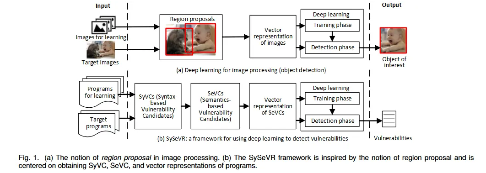
下面两个讨论使原文将程序分成更小的包含漏洞的语法和语义特征的代码片段，对应于图像处理中“区域建议”。
（1）直接将程序中的每个函数视为图像处理中的区域提议，过于粗粒度，因为漏洞检测器不仅需要判断一个函数是否存在漏洞，还需要确定漏洞的位置，故需要细粒度表示。（2）将每一行代码或语句视为漏洞检测的一个单元。然而这种处理有两个缺点：（i）程序中的大多数语句不包含任何漏洞； (ii) 语义上相互关联的多个语句不被视为一个整体。
由于观察到漏洞表现出一些语法特征，例如函数调用或指针使用，因此使用语法特征来识别 SyVC，作为漏洞检测的起点；然后SeVC 扩展 SyVC 以包括与 SyVC 语义相关的语句。图 1(b) 突出显示了受区域提案概念启发的 SySeVR 框架。
3.2.Extracting SyVCs
原文描述用漏洞语法特征来识别代码片段作为漏洞检测的初始候选者（即第一个阶段）。在下文的 EXPERIMENTS AND RESULTS节中会详细阐述提取漏洞语法特征的具体方法；原文表示这种方法并非完美，只涵盖了收集到的 93.6% 的易受攻击程序。
首先看两个个定义：
Definition 1.program, function, statement, token
程序 P 是一组函数 $f_1$, , , $f_η$, 记为 P = {$f_1$, , , $f_η$}；函数 $f_i$ (1 ≤ i ≤ η)，是一组有序的语句 $S_{i,1}$, , , $S_{i,m_i}$ , 记为为 $f_i$ = {$S_{i,1}$, , , $S_{i,m_i}$}；语句 $S_{i,j}$， 1 ≤ i ≤ η , 1 ≤ j ≤ mi，是一个有序的token集 $t_{i,j,1}$, , , $t_{i,j,w_{i,j}}$ ，记为 $S_{i,j}$ = {$t_{i,j,1}$, , , $t_{i,j,w_{i,j}}$}。token可以是标识符、运算符、常量和关键字，并且可以通过语法分析来提取。给定一个函数 $f_i$，有生成其 AST 的标准套路。 AST的根对应函数$f_i$，AST的叶子对应token $t_{i,j,g}$(1 ≤ g ≤ $w_{i,j}$)，AST的内部结点对应语句$S_{i,j}$或者$S_{i,j}$的多重连续token。即若一个SyVC对应一个AST的叶子节点，则它是一个token；若对应一个AST的内部节点，则它是一个语句或者由多个连续的token组成。
Definition 2.SyVC
给定一个程序 P = {$f_1$, , , $f_η$}, 其中 $f_i$ = {$S_{i,1}$, , , $S_{i,m_i}$},$S_{i,j}$ = {$t_{i,j,1}$, , , $t_{i,j,w_{i,j}}$}。代码元素(以下简称码元)$e_{i,j,z}$由$S_{i,j}$的一个或多个连续token组成，即$e_{i,j,z}$ = ($t_{i,j,u}$,,, $t_{i,j,v}$) ,1≤u≤v≤$w_{i,j}$ 。给定一组漏洞语法特征H = {$h_k$},1≤k≤β，其中$h_k$表示一个漏洞语法特征，β为漏洞语法特征的个数，即匹配一个漏洞语法特征$h_k$的码元$e_{i,j,z}$称为SyVC。
现给定算法1，如下所示,描述了如何从给定程序 P = {$f_1$, , , $f_η$} 和一组 H = {$h_k$},1≤k≤β 的漏洞语法特征来提取SyVCs。具体来说，算法 1 为每个函数 $f_i$ 生成一个 AST $T_i$；然后，算法1遍历$T_i$来识别SyVCs。即“匹配”一些{$h_k$}的码元，其中“匹配”操作与漏洞语法特征的表示有关。另外，一个 SyVC 可能是另一个 SyVC 的一部分。
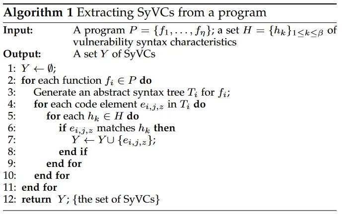
下面详细阐述如何提取SyVC
3.2.1.Extracting vulnerability syntax characteristics
原文利用商业工具 Checkmarx 的 C/C++ 漏洞规则来分析漏洞语法特征，因为开源工具（例如 Flaw$f_i$nder 和 RATS ）的解析器过于简单，规则不完善，故不选择。
有以下 4 种漏洞语法特征（每种都包含许多漏洞）：
• Library/API 函数调用（简称 FC）：这种语法特征涵盖了与原文的数据集一起发布的 811 个Library/API 函数调用，共106种CWE。
• Array Usage（简称AU）：这种语法特征涵盖了与数组相关的87种CWE（例如，与数组元素访问、数组地址算法相关的问题）。
• Pointer Usage（简称PU）：这种语法特征涵盖了与指针相关的103种CWE（例如，在指针运算、引用、作为函数参数的地址传递中的不当使用）。
• Arithmetic Expression（简称AE）：这种语法特征涵盖了45种与不正确的算术表达式相关的CWE（例如，整数溢出）。
下图显示了这 4 种语法特征在它们所涵盖的 CWE 方面相互重叠。这4种语法特征是从126个CWE ID对应的程序中产生的。一种语法特征可以覆盖多个CWE，并且一个CWE可以被一种或多种语法特征覆盖。
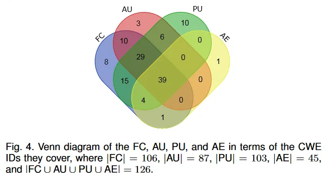
3.2.2.Matching syntax characteristics.
为了使用算法1提取SyVC，需要判断程序P中函数$f_i$的抽象语法树Ti上的代码元素$e_{i,j,z}$是否匹配漏洞语法特征。可以使用 Joern 生成 $T_i$。下面的方法，通过图2所示的示例程序，如图5所示，可以自动判断码元$e_{i,j,z}$是否符合语法特征。
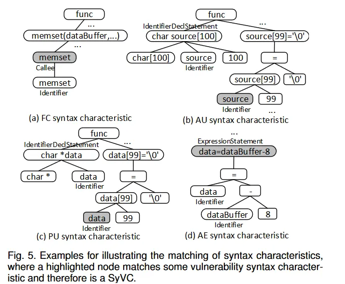
• 如图 5(a) 所示，如果满足以下两个条件则码元$e_{i,j,z}$匹配FC语法特征：
(i) $e_{i,j,z}$ 被调用；
(ii) $e_{i,j,z}$ 是上述 811 个函数调用之一。
• 如图 5(b) 所示，如果满足以下两个条件则码元$e_{i,j,z}$(如“memset”)匹配AU语法特征：
(i) $e_{i,j,z}$ 是在标识符声明语句中声明的标识符（即IdentifierDeclStatement) 节点；
(ii) IdentifierDeclStatement 节点包含字符 “[” 和 “]”。
• 如图 5(c) 所示，如果满足以下两个条件则码元$e_{i,j,z}$(如 “source”)匹配PU语法特征：
(i) $e_{i,j,z}$ 是在 IdentifierDeclStatement 节点中声明的标识符；
(ii) IdentifierDeclStatement 节点包含字符“*”。
• 如图 5(d) 所示，如果满足以下两个条件则码元$e_{i,j,z}$(“data=dataBuffer-8”)(如“data”)匹配AE语法特征：
(i) $e_{i,j,z}$ 是表达式语句 (ExpressionStatement)；
(ii)$e_{i,j,z}$ 包含一个字符“=”，并且在“=”的右侧有一个或多个标识符。
3.2.3.Extracting SyVCs
现在就可以使用算法1提取SyVCs了。总共提取了420,627 个 SyVC，涵盖了从 SARD 收集的 13,016 个易受攻击的程序；计算覆盖率为 93.6%，是因为 SARD 给出了每个漏洞的精确位置；相反，无法计算 NVD 的覆盖率，因为它没有给出漏洞的精确位置。提取 SyVC 的平均时间为 270 毫秒。
3.3.Transforming SyVCs to SeVCs
为了检测漏洞，需要将 SyVC 转换为 SeVC，以容纳与相关 SyVC 语义相关的语句。原文利用程序切片技术来识别与 SyVC 语义相关的语句，需要使用程序依赖图（PDG），进一步需要使用在控制流图 (CFG) 上定义的数据依赖和控制依赖。
现在了解以下CFG、data dependency、control dependency、PDG
Definition 3.CFG
对于程序 P = {$f_1$, , , $f_η$}，函数$f_i$的CFG是一个图 $G_i$ = ($V_i$, $E_i$)，$V_i$ = {$n_{i,1}$, , , $n_{i,c_i}$ } 是一组节点，每个节点代表一个语句或控制谓词，Ei = {$e_{i,1}$, , , $e_{i,d_i}$ } 是一组直接边，每条边代表一对节点之间可能的控制流。
Definition 4.data dependency
给定一个程序 P = {$f_1$, , , $f_η$}, 函数 $f_i$ 的 CFG 为 $G_i$ = ($V_i$, $E_i$),$G_i$ 中的两个节点 $n_{i,j}$ 和 $n_{i,e}$, 其中1 ≤ j, e ≤ $c_i$ ,j ≠ e。若在 $G_i$ 中存在从 $n_{i,e}$ 到 $n_{i,j}$的路径，并且在节点$n_{i,e}$ 处计算的值被用于节点 $n_{i,j}$，则 $n_{i,e}$是 $n_{i,j}$ 的数据依赖。
Definition 5.control dependency
给定一个程序P = {$f_1$, , , $f_η$}, 函数 $f_i$ 的 CFG 为 $G_i$ = ($V_i$, $E_i$),$G_i$ 中的两个节点 $n_{i,j}$ 和 $n_{i,e}$, 其中1 ≤ j, e ≤ ci ,j ≠ e。 若从 $n_{i,e}$ 开始到程序结束的所有路径都经过 $n_{i,j}$，称 $n_{i,j}$ 后支配$n_{i,e}$；若存在一条从 $n_{i,e}$ 开始到 $n_{i,j}$ 结束的路径，使得 :
(i). $n_{i,j}$ 后支配路径上除 $n_{i,e}$ 和 $n_{i,j}$ 之外的每个节点，
(ii). $n_{i,j}$ 不后支配 $n_{i,e}$，
则 $n_{i,j}$ 控制依赖于 $n_{i,e}$。
基于数据依赖和控制依赖，PDG可以定义如下。
Definition 6.PDG
给定一个程序 P = {$f_1$, , , $f_η$}, 函数$f_i$的PDG记为 $G_i’$ = ($V_i$, $E_i’$)，其中$V_i$与CFG $G_i$中的相同，$E_i$′ = { $e_{i,1}’$,,,$e_{i,d_i}’$} 是一组直接边，每条边代表一对节点之间的数据或控制依赖关系。
3.3.1.Program Slices
给定 PDG，就可以从 SyVC 中提取程序片段。同时考虑前向和后向切片，这是因为：
（i）SyVC 可能会影响一些后续语句，因此可能包含漏洞；
(ii) 影响 SyVC 的语句可能使 SyVC 易受攻击
Definition 7.forward, backward, and program slices of a SyVC
给定一个程序 P = {$f_1$, , , $f_η$}，每个函数 $f_i$ (1 ≤ i ≤ η) 的 PDG $G_i’$ = ($V_i$, $E_i’$)，以及 $G_i′$ 中语句$S_{i,j}$ 的 SyVC, $e_{i,j,z}$。
函数$f_i$的前向切片SyVC $e_{i,j,z}$，由 $fs_{i,j,z}$ 表示，被定义为一组有序的节点 {$n_{i,x_1}$,,,$n_{i,x_{μ_i}}$} ⊆ $V_i$，其中的 $n_{i,x_p}$ , 1 ≤ $x_1$ ≤ $x_p$ ≤ $x_{μ_i}$ ≤ $c_i$，可从 Gi’ 中的 $e_{i,j,z}$到达。也就是说，f$s_{i,j}$ 中的节点来自 Gi′ 中从 $e_{i,j,z}$ 开始的所有路径。
程序 P 中的过程间前向切片SyVC $e_{i,j,z}$ ，由 $fs_{i,j,z}’$ 表示，被定义为一组有序的节点，其中:
(i) 一个节点属于一个或多个 PDG;
(ii)每个节点都可以通过一系列函数调用从 $e_{i,j,z}$ 出发到达。
也就是说，有或没有交叉函数边界（通过函数调用）， $fs_{i,j,z}’$都是一个前向切片。
函数$f_i$的后向切片SyVC $e_{i,j,z}$，由 $bs_{i,j,z}$ 表示，被定义为一组有序的节点 {$n_{i,y_1}$,,,$n_{i,y_{v_i}}$} ⊆ $V_i$，其中 $n_{i,y_{p’}}$ , 1 ≤ $y_1$ ≤ $y_p$ ≤ $y_{v_i}$ ≤ $c_i$，由此 $e_{i,j,z}$ 在 $G_i′$ 中可达。也就是说，$bs_{i,j,z}$ 中的节点来自 $G_i′$ 中以 $e_{i,j,z}$ 结束的所有路径。
程序 P 中的过程间后向切片SyVC $e_{i,j,z}$ ，表示为 $bs_{i,j,z}’$，被定义为一组有序的节点，其中 :
(i) 一个节点属于一个或多个 PDG;
(ii)每个节点都可以通过一系列函数调用到达 $e_{i,j,z}$。
也就是说， $bs_{i,j,z}’$ 有或没有交叉函数边界（通过函数调用）,都是一个后向切片。
给定过程间前向切片 $fs_{i,j,z}’$ 和过程间后向切片$bs_{i,j,z}’$，SyVC $e_{i,j,z}$ 的（过程间）程序切片由 $ps_{i,j,z}$ 表示，定义为通过在 SyVC $e_{i,j,z}$ 处合并 $fs_{i,j,z}’$ 和 $bs_{i,j,z}’$ 的有序节点集（属于 P 中函数的 PDG）。也就是说， $ps_{i,j,z}$ 是一个有序集合，它是通过以保序方式连接前向切片 $fs_{i,j,z}’$ 和后向切片$bs_{i,j,z}’$ 而省略相邻的重复节点（即使用一个节点替换同一节点的多个相邻节点）获得的。
在图3中，第三列显示了SyVC“数据”的过程间前向切片、过程间后向切片和程序切片（程序源代码中的第25行）。 SyVC“数据”的过程间前向切片跨越函数 func 和 println。 SyVC“数据”的过程间后向切片与函数func中SyVC“数据”的后向切片相同，因为没有其他函数调用函数func。 SyVC“数据”的程序切片是通过连接过程间前向切片和过程间后向切片，同时省略SyVC“数据”对应节点的一个（两个）相邻出现（程序源码第25行）得到的。
3.3.2.Defining SeVCs
提取 SyVC 的程序片段后，现在可以定义 SeVC了。
Definition 8. SeVC.
给定一个程序 P = {$f_1$, …, $f_η$} 和一个在函数 $f_i$ 的语句 $S_{i,j}$ 中的 SyVC $e_{i,j,z}$，对应于 SyVC $e_{i,j,z}$ 的 SeVC，用 $δ_{i,j,z}$ 表示，被定义为 P 语句中的有序子集，用 $δ_{i,j,z}$ = {$S_{a_1,b_1}$, …, $S_{a_{v_{i,j,z}}, b_{v_{i,j_z}}}$}其中语句$S_{a_p,b_q}$ (1 ≤ p, q ≤ $v_{i,j,z}$)和 SyVC $e_{i,j,z}$之间存在数据依赖或控制依赖。换句话说，SeVC $δ_{i,j,z}$ 是一组有序的语句，对应于（过程间）程序切片 $ps_{i,j,z}$ 的节点。
3.3.3.Computing SeVCs
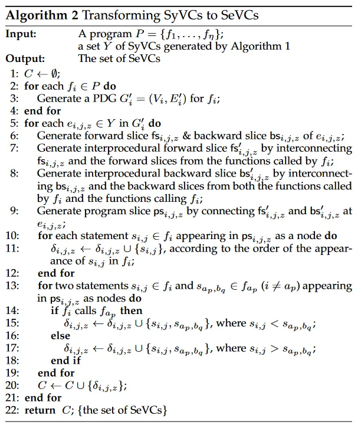
算法 2 将前面的讨论生成 PDG总结为三个步骤；算法 1 输出 SyVC 的程序片段；并将程序切片转换为 SeVCs。下面详细说明这些步骤，并使用图 3 来说明一个运行实例。具体来说，图 3 详细说明了 SyVC “data”（与指针使用相关)的 SyVC→SeVC 转换，同时容纳由数据依赖性和控制依赖性引起的语义信息。
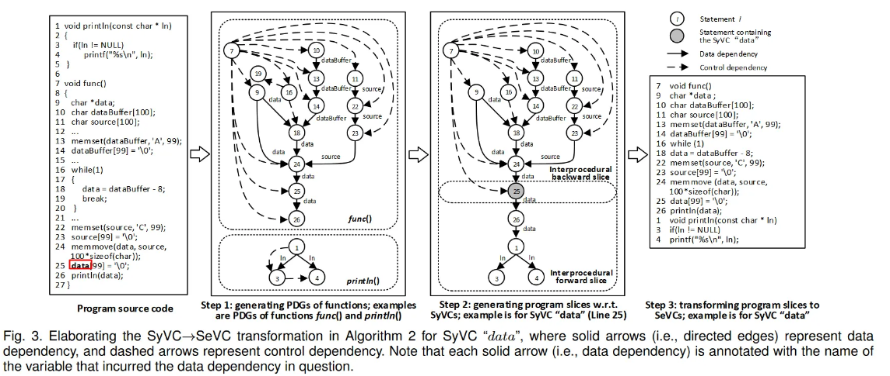
步骤 1（算法 2 中的第 2-4 行）。此步骤为每个函数生成一个 PDG,已有算法。作为运行实例，图3的第二列显示了分别对应函数 func 和 println 的PDG，其中每个数字代表一条语句的行号。
步骤 2（算法 2 中的第 6-9 行）。此步骤为每个 SyVC $e_{i,j,z}$ 生成程序切片 $ps_{i,j,z}$。过程间前向切片 $fs_{i,j,z}’$ 是通过合并 $fs_{i,j,z}$ 和来自 $f_i$ 调用的函数前向切片获得的。过程间后向切片 $bs_{i,j,z}’$ 是通过合并 $bs_{i,j,z}$ 和来自 $f_i$ 调用的函数和调用 $f_i$ 的函数的后向切片获得的。最后，$fs_{i,j,z}’$ 和$bs_{i,j,z}’$ 被合并成一个程序片 $ps_{i,j,z}$。
来个实例说明，图 3 中的第三列显示了 SyVC “data” 的程序切片，其中后向切片对应函数 func，前向切片对应函数 func 和 println。为了获得 SyVC 的前向切片，仅利用数据依赖性，有两个原因：（i）在大多数情况下，通过控制依赖性受 SyVC 影响的语句不会受到攻击，（ii）利用具有对 SyVC 的控制依赖将涉及许多与漏洞无关的语句。例如，考虑“while”循环的条件表达式中的指针变量 SyVC，若在“while”循环体中没有引用指针变量，“while”循环体中的语句仅通过控制依赖性受到 SyVC 的影响，意味着 SyVC 不会在“while”循环的主体；若与 SyVC 相关的指针变量的前向切片涉及控制依赖，则“while”循环体中所有依赖于 SyVC 的控制语句将包含在 SeVC 中，尽管它们具有与漏洞关系不大。另一方面，为了获得 SyVC 的后向切片，同时利用了数据依赖性和控制依赖性。
步骤 3（算法 2 中的第 10-19 行）。此步骤将程序切片转换为 SeVCs。首先，该算法将属于函数 $f_i$ 并作为节点出现在 $ps_{i,j,z}$中的语句转换为 SeVC，同时保留这些语句在 $f_i$ 中的顺序。如图3所示的运行实例，13条语句属于函数func，3条语句属于函数println，根据这两个函数中这些语句的顺序，得到两组有序的语句：Lines {7, 9, 10, 11, 12, 14, 16, 18, 22, 23, 24, 25, 26}和Lines {1, 3, 4}。其次，该算法将属于不同函数的语句转换为一个 SeVC。对于作为节点出现在 $ps_{i,j,z}$ 中的语句 $S_{i,j}$ ∈ $f_i$ 和 $S_{a_p,b_q}$ ∈ $f_{a_p}$(i≠$a_p$) ，如果 $f_i$ 调用 fap ，则 $S_{i,j}$ 和 $S_{a_p,b_q}$ 的函数调用顺序相同, 即 $S_{i,j}$ < $S_{a_p,b_q}$ ;否则， $S_{i,j}$ > $S_{a_p,b_q}$ 。在图三中，SeVC为Lines {7, 9, 10, 11, 13, 14, 16, 18, 22, 23, 24, 25, 26, 1, 3, 4}，其中函数 func 中的语句出现在函数 println 中的语句之前，因为 func 调用了 println。图3中的第四列显示了与 SyVC“data” 对应的SeVC，即与 SyVC “data” 在语义上相关的一组语句。
3.4.Encoding SeVCs into Vectors
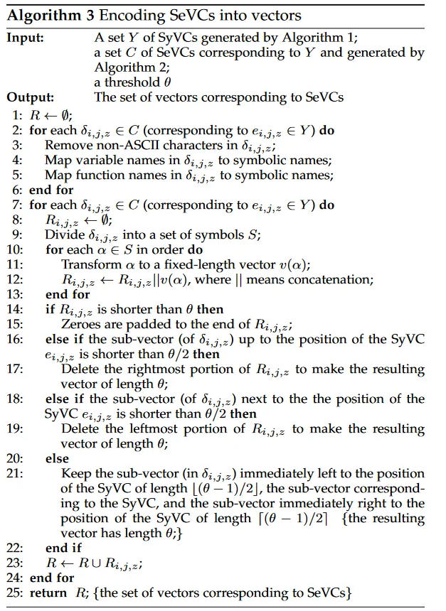
算法 3 分三步将 SeVCs 编码为向量。
步骤 1（算法 3 中的第 2-6 行）。为了在捕获程序语义信息的同时使 SeVCs 独立于用户定义的变量和函数名称，每个 SeVC δ(i,j,z) 都被转换为符号表示。原文建议删除非 ASCII 字符和注释，然后将用户定义的变量名以一对一的方式映射到符号名（例如，“V1”、“V2”），最后映射用户定义的变量名。以一对一的方式将函数名称转换为符号名称（例如，“F1”、“F2”）。不同的 SeVCs 可能具有相同的符号表示。
步骤 2（算法 3 中的第 8-13 行）。将符号表示用word2vec编码为向量。原文通过词法分析（例如，“V1”、“=”、 “V2”、“-”、“8”和“;”）将 SeVC $δ_{i,j,z}$符号表示分为连续的符合，再将每个符号转换为固定长度的向量，通过连接向量，得每个 SeVC 的向量 $R_{i,j,z}$。
步骤 3（算法 3 中的第 14-22 行）。因为符号的数量（即表示 SeVC 的向量）可能不同，且神经网络采用与输入相同长度的向量，使用阈值 θ 作为神经网络输入的向量长度.当一个向量比 θ 短时，零被填充到向量的末尾；当向量长于 θ 时，有三种情况，但基本思想是使 SyVC 出现在结果向量的之中：
(i) 到 SyVC 的子向量比 θ/2 短。在这种情况下，删除 $R_{i,j,z}$ 的最右边部分以使结果向量的长度为 θ。
(ii) SyVC 邻居的子向量比 θ/2 短。在这种情况下，删除 $R_{i,j,z}$ 的最左边部分，使结果向量的长度为 θ。
(iii) 将长度为 ⌊(θ − 1)/2⌋ 的子向量保留在 SyVC 的最左边，长度为 ⌈(θ − 1)/2⌉ 的子向量直接保留在 SyVC 的右边。与 SyVC 一起，获得了一个长度为 θ 的向量。例如，假设 θ = 15000，每个符号的长度为 30，这意味着每个 SeVC 有 500 个符号。假设一个SeVC中的符号数是510（因此需要减少到500），而SyVC在第255个符号的位置（在510个符号中），那么保留紧邻SyVC的249个连续符号和紧邻 SyVC 的 250 个符号。与 SyVC 一起，获得了一个包含 500=249+1+250 个符号的向量。每个 SyVC 都被转换为 SeVC，并且在 SeVC 中只出现一次。
实验结果
使用word2vec编码
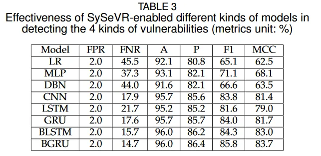
使用bag-of-words编码
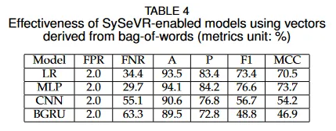
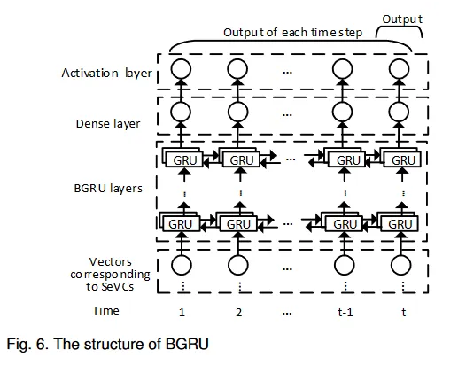
考虑了control-dependency
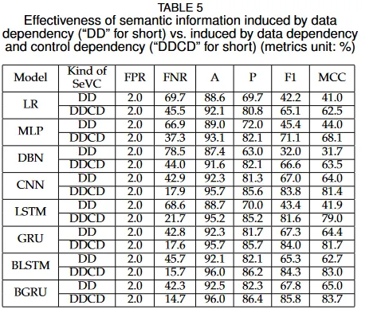